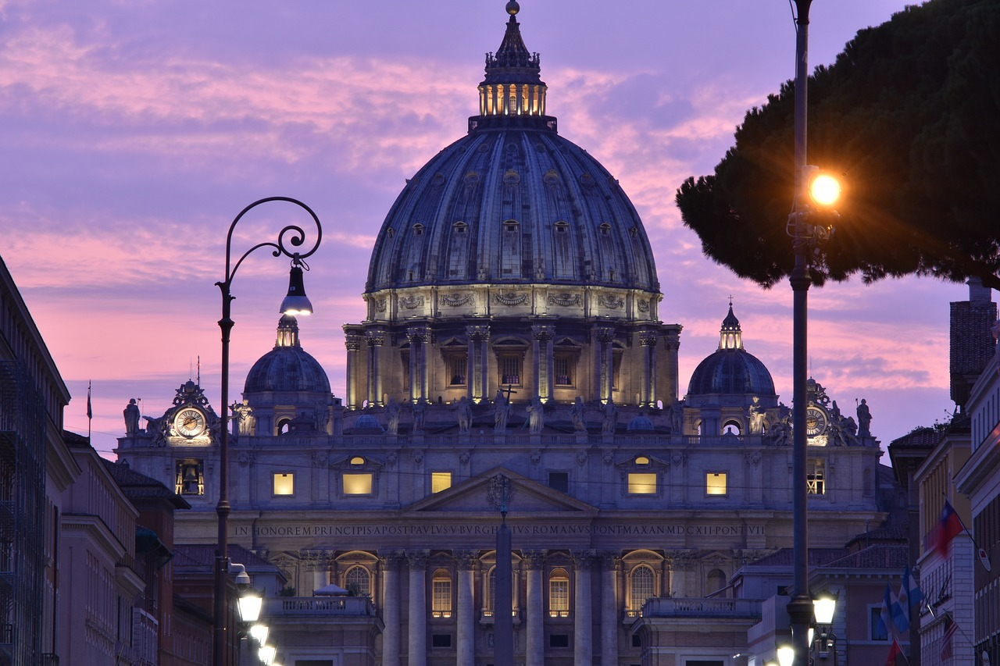
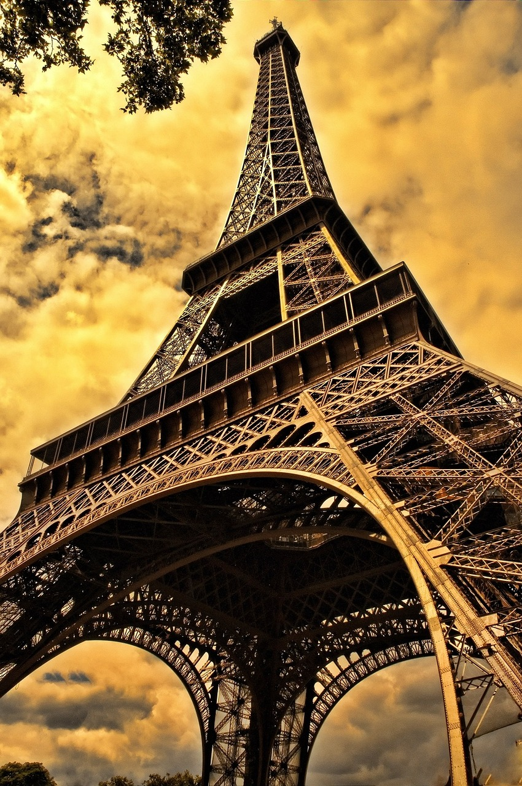
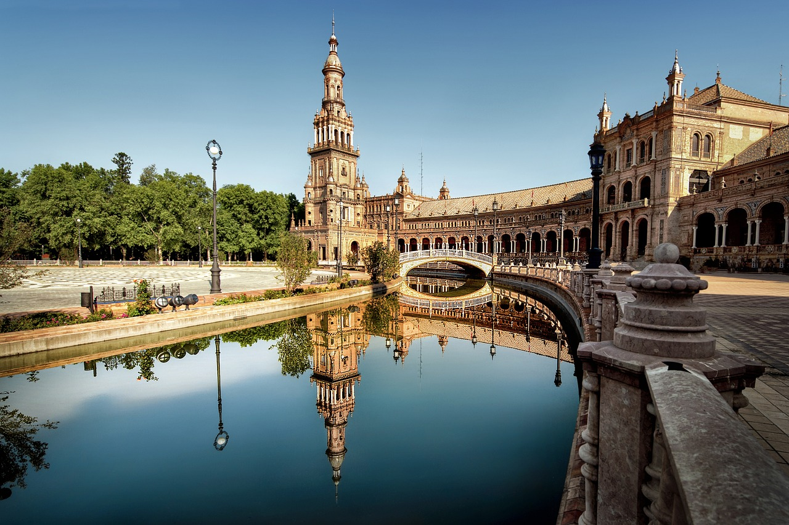

Šis ir mans sapņu ceļojums uz Romu, Parīzi un Barselonu. Ceļojumā iepazīšu kultūru, vēsturi un gardēžu pasauli.

Roma ir Itālijas galvaspilsēta, slavena ar Kolizeju, Panteonu un Vatikānu.
Interesants fakts: Roma ir vairāk nekā 2700 gadu sena pilsēta.

Parīze ir mīlestības pilsēta, kurā atrodas Eifeļa tornis, Luvra un Dievmātes katedrāle.
Interesants fakts: Parīzē ir vairāk nekā 30 tiltu pāri Sēnas upei.

Barselona ir spilgta Spānijas pilsēta ar Gaudi arhitektūru, pludmalēm un tapām.
Interesants fakts: Barselonā atrodas nepabeigtā Sagrada Familia katedrāle.
| Dienas | Pilsēta | Aktivitātes |
|---|---|---|
| 1-3 | Roma | Kolizejs, Panteons, Vatikāns |
| 4-7 | Parīze | Eifeļa tornis, Luvra, Notre-Dame |
| 8-10 | Barselona | Sagrada Familia, Park Güell, pludmale |
| Pilsēta | Viesnīca | Cena/nakts | Transports | Izmaksas |
|---|---|---|---|---|
| Roma | Hotel Roma Centro | 90 € | Lidmašīna no Rīgas | 120 € |
| Parīze | Hôtel Paris Lumière | 110 € | Vilciens no Romas | 80 € |
| Barselona | Hotel Barcelona Sol | 95 € | Vilciens no Parīzes | 60 € |